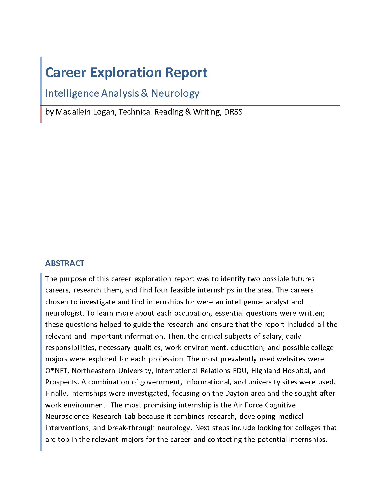

Internship Overview
Students will participate in a required 72-hour internship experience before senior year. An internship provides students the opportunity to work closely with a business, non-profit or government agency on a meaningful project. The goal of the internship is to build upon professional skills, discover opportunities for the future and provide students with an exploratory and valuable real-world experience.
Career Exploration
Click on Image to view and download PDF.
Abstract
The purpose of this career exploration report was to identify two possible futures careers, research them, and find four feasible internships in the area. The careers chosen to investigate and find internships for were an intelligence analyst and neurologist. To learn more about each occupation, essential questions were written; these questions helped to guide the research and ensure that the report included all the relevant and important information. Then, the critical subjects of salary, daily responsibilities, necessary qualities, work environment, education, and possible college majors were explored for each profession. The most prevalently used websites were O*NET, Northeastern University, International Relations EDU, Highland Hospital, and Prospects. A combination of government, informational, and university sites were used. Finally, internships were investigated, focusing on the Dayton area and the sought-after work environment. The most promising internship is the Air Force Cognitive Neuroscience Research Lab because it combines research, developing medical interventions, and break-through neurology. Next steps include looking for colleges that are top in the relevant majors for the career and contacting the potential internships.
My Internship
Mentor Information
Mentor: Chris Perkins
Company: Roche Diabetes Care
Position: Lead Market Analyst
Email: christopher.perkins@roche.com
Focus of Internship
The focus of the internship is to introduce Bayesian statistics. The exploration will be facilitated by studying the Monty Hall game show and developing an Excel simulator for contestant choices and outcomes.
Student Responsibilities
The student will be self-directed and develop a basic understanding of conditional probability. The understanding of conditional probability will be used to develop the Bayes theorem and then apply the learnings to the Monty Hall problem.
Expectation of the Student
The student will develop a PowerPoint presentation explaining conditional probability and Bayes theorem. The presentation will then show how the Bayes theorem can be applied to the Monty Hall problem. An Excel spreadsheet model will be developed to demonstrate empirically that contestants are twice as likely to win the contest if they change their door selection.
Intership Log
Entry 1
Dates: 7/20/21-7/21/21
Hours: 6
I met with my mentor to discuss what I would do during my internship and was introduced to Bayesian statistics and the Monty Hall problem. I researched the Monty Hall problem and started answering questions on the Bayes analysis worksheet my mentor sent me. I got stuck after Question 6 and decided to email my mentor the following morning to ask if I had gotten something wrong or was doing the problem incorrectly.


Entry 2
Date: 7/22/21
Hours: 4
I emailed my mentor in the morning about the confusion and then finished the problems based on my existing knowledge. While doing this, I realized I had assumed there were receipts with neither milk nor cookies and was having a hard time finding the intersection because of that. I then went back and completed the problems again, assuming that there were no situations where there was neither event. I emailed my mentor a second time and updated him with my new answers.

Entry 3
Date: 7/31/21
Hours: 4
My mentor emailed me back and confirmed that there was no situation where event A and B didn’t apply. He then emailed me additional questions about Bayes’ theorem, and after some additional research, I completed these.
Entry 4
Date: 8/1/21
Hours: 6
I had an extremely long drive on the way to college visits, and I took this as a chance to do more research into conditional probability and statistics on YouTube. I also researched Data Analytics careers and opportunities.
Entry 5
Dates: 8/6/21-8/8/21
Hours: 8
I met with my mentor to discuss my answers for the Bayes’ theorem worksheet and any mistakes I made. He then explained the Excel simulator and presentation I was going to make. I generated the data in Excel for my simulation of Bayes’ Theorem. I also researched how to use different techniques in Excel I needed to complete the assignment.
Entry 6
Date: 8/9/21
Hours: 4
I evaluated the data and concluded how it supported Bayes’ Theorem...
Entry 7
Dates: 8/10/21-8/11/21
Hours: 8
Description
Entry 8
Date:
Hours:
Description
Entry 9
Date:
Hours:
Description
Entry 10
Date:
Hours:
Description
Entry 11
Date:
Hours:
Description
Reflection
...
Mentor Evaluation Form